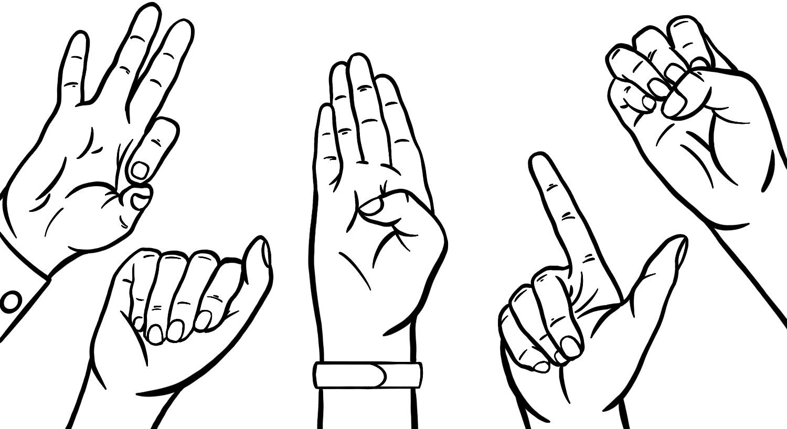

Projects
Save Feature
- Designed a Dealer Strategy button where PDNs (Primary Dealer Numbers) would be updated/deleted to a certain dealer strategy table improving efficiency and productivity by 50% turnaround time
- Developed a macro button using VBA script to increase file saving and uploading efficiency by 50% to the shared CCO team folder
- The customized macro button improved convenience and utility by 100% for seamless retrieval of information improving accessibility and productivity for the Data Science and Solutions team @Ally

Blind Reconnaissance Chess
- Implemented chess ML algorithms, such as minimax with alpha-beta pruning, and multiple hypothesis tracking search to explore game states and create optimal decisions for improving AI's gameplay and performance
- Utilized advanced reinforcement learning algorithms to train the chess AI by optimizing rewards and penalties
- Built 3 different bots with various gameplay strategies (defensive, attack, etc.) with default StockFish heuristic to maximize the probability of playing a winning move

Signul
- Collaborated with four peers to develop a real time American Sign language detector utilizing Python
- Allowed users to communicate with non-signers by converting sign language gestures to text
- Headed in-person status meetings to discuss scope, issues noted, and next steps for developing the application which incorporated leveraging software extending to Jupyter, GitHub, OpenCV